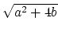
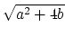

| (1) | a2 +4b > 0 |
| (2) | | a - | |
Consider the following recurrence relation defined on nonnegative integral values of n:
Here a and b are constants such that the following two conditions are satisfied:
| (1) | a2 +4b > 0 |
| (2) | | a - | |
Given the values of f0, f1, a, b and n, your job is to write a program that calculates the value of F(n). You may safely assume that F(n) will be an integer with absolute value not exceeding 109.
The first line of the input file contains an integer N
(1 N
N 10, 000) denoting the number of test cases to follow.
10, 000) denoting the number of test cases to follow.
Each of the following N lines contains five (5) values in the following order: f0, f1, a, b and n. Here, f0 and f1 are integers with absolute values not exceeding 109, and n is a nonnegative integer not greater than. On the other hand, a and b are floating-point numbers satisfying the two conditions stated in the problem description. Be assured that
| a|,| b| 106.
106.
For each test case in the input file print a separate line containing the value of F(n).
3 0 1 1 1 20 0 1 -1 0 1000000000 -1 1 4 -3 18
6765 -1 387420487